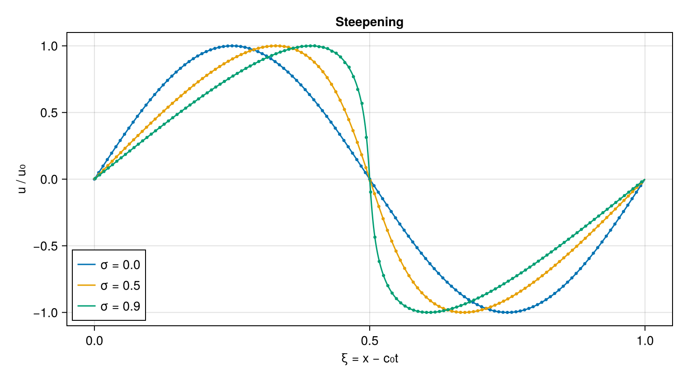
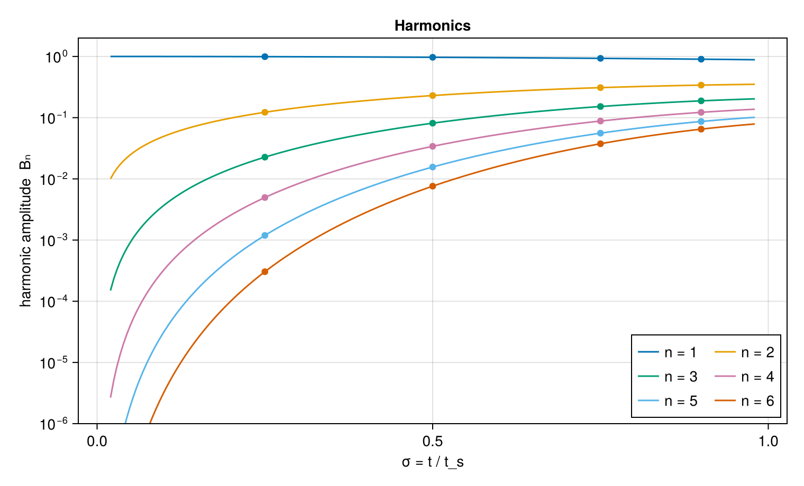
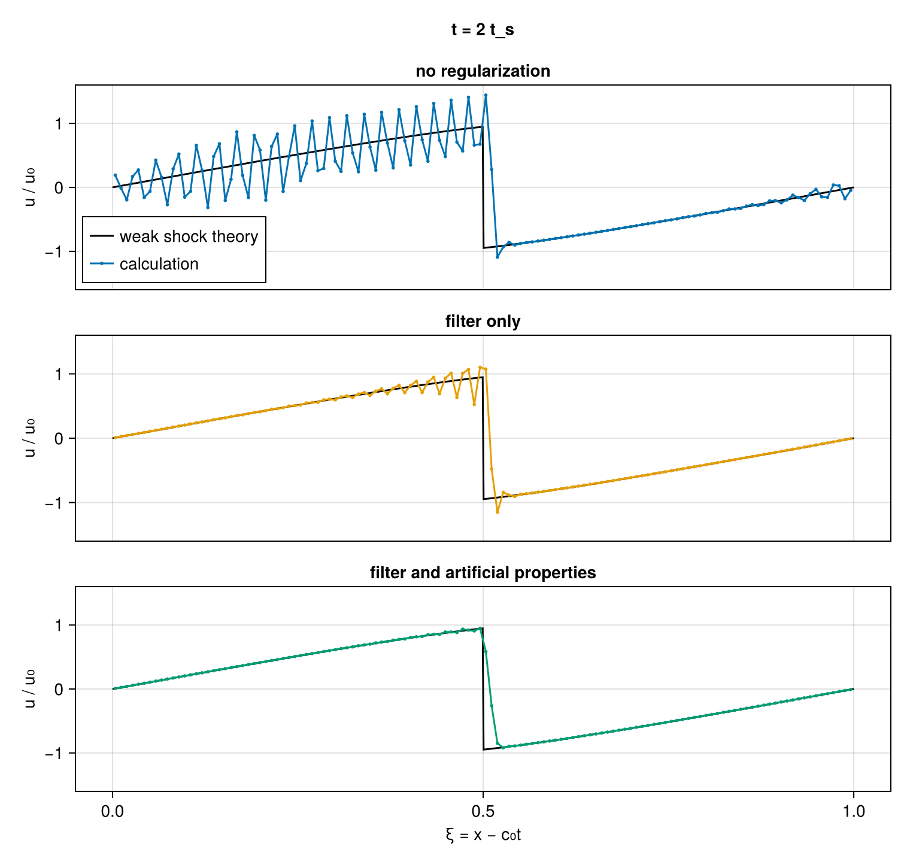

Coalescing shock
Linear acoustics treats sound as a disturbance of vanishing amplitude that keeps its shape. At a real amplitude the compressions of a wave travel faster than its rarefactions and each period steepens; a shock forms where the steepening outpaces viscous and thermal dissipation. Loud sound reaches that point: the steepening gives a trombone played loudly its brassy sound and turns the pressure signature of a supersonic aircraft into the N-wave of a sonic boom. Earnshaw described the mechanism in 1860 and Fubini gave the harmonic content of the distorted wave in 1935. In an inviscid gas nothing opposes the steepening, and up to the moment the first shock forms the one-dimensional Euler equations have an exact solution for this wave, so a calculation can be checked against it harmonic by harmonic.
This first tutorial sets up that calculation, runs it, compares it with the exact solution, and then continues past the shock time to show what happens to a shock on a grid without regularization, the subject of the next tutorial. Only $x$ is resolved; the other two dimensions contain one point and carry no derivatives.
using CompactLES # re-exports MPI
MPI.Initialized() || MPI.Init(threadlevel=:funneled)
using CairoMakie
using Printf
CairoMakie.activate!(type = "png")Simple waves
Take a calorically perfect gas with heat-capacity ratio $\gamma$, at rest with density $\rho_0 = 1$ and sound speed $c_0 = 1$, so that $p_0 = 1/\gamma$. A disturbance that travels in one direction only, a simple wave, carries a fixed relation between the local fluid velocity $u$ and the local sound speed,
\[c = c_0 + \frac{\gamma - 1}{2}\,u ,\]
and its density and pressure follow the isentrope, $\rho = \rho_0 (c/c_0)^{2/(\gamma-1)}$ and $p = p_0 (\rho/\rho_0)^\gamma$. Each value of $u$ then moves at the speed $u + c = c_0 + \beta u$ with $\beta = (\gamma + 1)/2$: the fluid velocity adds to the sound speed, and the sound speed itself is higher where the gas is compressed. A wave that starts as $u = u_0 \sin kx$ therefore satisfies
\[u(x, t) = u_0 \sin\bigl(k\,[x - (c_0 + \beta u)\,t]\bigr),\]
an implicit equation for $u$. The crests overtake the troughs ahead of them, and the steepest point of the profile first becomes vertical at the shock formation time
\[t_s = \frac{1}{\beta k u_0}.\]
Fubini solved the implicit equation as a Fourier series. With $\sigma = t/t_s$, the $n$th harmonic of $u/u_0$ has the amplitude
\[B_n(\sigma) = \frac{2 J_n(n\sigma)}{n\sigma},\]
where $J_n$ is the Bessel function of the first kind. At $\sigma = 0$ only the fundamental is present; as $\sigma \to 1$ energy moves into every higher harmonic, and $B_n$ decays only as $n^{-4/3}$ at the shock time.
gamma = 1.4
u0 = 0.1 # velocity amplitude, a tenth of c0
k = 2pi # one wavelength across the unit domain
beta = (gamma + 1) / 2
t_shock = 1 / (beta * k * u0)The exact solution solves the implicit equation at each point by a damped fixed-point iteration, which converges for $\sigma < 1$. The Bessel function is the average of $\cos(n\tau - x\sin\tau)$ over one period of $\tau$; the trapezoidal rule on a periodic integrand converges faster than any power of the node count, so 64 nodes give it to round-off here.
function earnshaw(x, t)
u = u0 * sin(k * (x - t))
for _ in 1:400
u = (u + u0 * sin(k * (x - (1 + beta * u) * t))) / 2
end
return u
end
besselj(n, x; m = 64) = sum(cos(n * τ - x * sin(τ)) for τ in (0:m-1) .* (2pi / m)) / m
fubini(n, σ) = 2 * besselj(n, n * σ) / (n * σ)Initial state
A Problem holds the physics: the equation of state, the domain, the boundary conditions and the initial state. IdealSpecies is a calorically perfect gas with gas constant $R$ and heat-capacity ratio $\gamma$. The domain is always nominally three-dimensional; the extents of $y$ and $z$ do not matter here because the grid will give them one point each. Prim is a primitive state: density, pressure and velocity (or temperature in place of one of the first two). The initial condition returns one at each grid point, here the simple wave described above.
function simple_wave(x)
u = u0 * sin(k * x)
c = 1 + (gamma - 1) / 2 * u # c0 = 1
rho = c^(2 / (gamma - 1))
Prim(rho = rho, p = rho^gamma / gamma, u = (u, 0.0, 0.0))
end
problem = Problem(
name = "steepening sound wave",
eos = IdealSpecies("gas"; R = 1.0, gamma = gamma),
domain = ((0.0, 1.0), (0.0, 1.0), (0.0, 1.0)),
bcs = (PeriodicBC(), PeriodicBC(), PeriodicBC()),
ic = (x, y, z) -> simple_wave(x),
)Problem "steepening sound wave"
domain: (0.0, 1.0) × (0.0, 1.0) × (0.0, 1.0)
metric: CartesianMetric
EOS: IdealMixture (1 species)
boundary conditions: PeriodicBC / PeriodicBC, PeriodicBC / PeriodicBC, PeriodicBC / PeriodicBC
sources: noneGrid and schemes
Numerics holds everything about how the problem is solved. n_global = (N, 1, 1) resolves only $x$, with $N = 128$ points. The spatial derivative is the sixth-order compact scheme of Lele, the default: the derivative values along a grid line are coupled through a tridiagonal solve, and the scheme resolves short waves far better than an explicit stencil of the same width. Time advances with a five-stage, fourth-order low-storage Runge–Kutta method, at a step set by the CFL number from the fastest local wave speed.
By default CompactLES also adds localized artificial viscosity near shocks and applies a compact low-pass filter after every step. Both are turned off for this first run: before $t_s$ the solution is smooth, and the comparison with the exact solution then measures the discretization alone.
N = 128
numerics = Numerics(
n_global = (N, 1, 1),
art = ArtificialProperties(enabled = false),
filter = nothing,
cfl = 0.6,
)
solver, Q = setup(problem, numerics)(Solver(grid=128 × 1 × 1, t=0.0, step=0, cfl=0.6, metric=CartesianMetric), ConservedState{Float64}(136 × 1 × 1 × 5))setup samples the initial condition on the grid and converts it to the conserved variables the solver advances: density, the three momentum components and the total energy. The spatial discretization turns the Euler equations into a system of ordinary differential equations, $dQ_h/dt = R_h(Q_h)$, which run! integrates.
Before the shock
line_profile returns a named variable along one axis as a (coordinate, value) pair. A Callback with an AtTime trigger runs at requested times, and run! shortens the step before each of them so that a step ends exactly there.
sigmas = [0.25, 0.5, 0.75, 0.9]
x, u_initial = line_profile(solver, Q, :u)
snapshots = Vector{Float64}[]
record = Callback(AtTime(sigmas .* t_shock), function (solver, Q)
push!(snapshots, line_profile(solver, Q, :u)[2])
nothing
end)
run!(solver, Q; tfinal = 0.9t_shock, nmax = 10_000, callback = record)
solver.step288The wave travels a distance $c_0 t$ while it steepens. Plotting against $\xi = x - c_0 t$, the position in a frame moving at the sound speed, keeps the waveforms aligned, so that only the change of shape remains. Dots are the calculation, lines the exact solution.
moving(x, t) = mod.(x .- t, 1) # c0 = 1
ξ = range(0, 1; length = 800)
fig = Figure(size = (760, 420))
ax = Axis(fig[1, 1], xlabel = "ξ = x − c₀t", ylabel = "u / u₀", title = "Steepening")
for (σ, u, color) in zip([0.0, 0.5, 0.9], [u_initial, snapshots[2], snapshots[4]],
Makie.wong_colors())
t = σ * t_shock
lines!(ax, ξ, earnshaw.(ξ .+ t, t) ./ u0; color, label = "σ = $σ")
scatter!(ax, moving(x, t), u ./ u0; color, markersize = 5)
end
axislegend(ax, position = :lb)
fig
Harmonics
The amplitude of the $n$th Fourier mode of the grid function is $(2/N)\,\lvert\sum_j u_j e^{-inkx_j}\rvert$. Fubini's coefficients are amplitudes in a frame moving at $c_0$, which only shifts the phases.
harmonic(u, n) = 2 / length(x) * abs(sum(u .* cis.(-n * k .* x))) / u0
fig = Figure(size = (760, 460))
ax = Axis(fig[1, 1], xlabel = "σ = t / t_s", ylabel = "harmonic amplitude Bₙ",
yscale = log10, title = "Harmonics")
σs = range(0.02, 0.98; length = 200)
for (n, color) in zip(1:6, Makie.wong_colors())
lines!(ax, σs, fubini.(n, σs); color, label = "n = $n")
scatter!(ax, sigmas, [harmonic(u, n) for u in snapshots]; color)
end
ylims!(ax, 1e-6, 2)
axislegend(ax, position = :rb, nbanks = 2)
fig
The first ten harmonics at $\sigma = 0.9$ agree with the exact amplitudes to the relative errors below:
relative_errors = [abs(harmonic(snapshots[4], n) / fubini(n, 0.9) - 1) for n in 1:10]
@printf("largest relative error, harmonics 1-10: %.1e\n", maximum(relative_errors))largest relative error, harmonics 1-10: 1.6e-05The pointwise error is larger, and it sits at the steep front:
pointwise = abs.(snapshots[4] .- earnshaw.(x, 0.9t_shock)) ./ u0
@printf("largest pointwise error %.1e u0 at ξ = %.3f\n", maximum(pointwise),
moving(x, 0.9t_shock)[argmax(pointwise)])largest pointwise error 1.7e-02 u0 at ξ = 0.486The highest harmonics are concentrated at the front, and at $\sigma = 0.9$ their amplitudes decay slowly enough that modes near the grid's resolution limit still carry part of the profile. Those modes travel at the wrong speed on any finite grid, so the error concentrates there while the resolved harmonics stay accurate. At $\sigma = 0.9$ the 40th harmonic, close to the shortest wave the sixth-order scheme resolves on 128 points, still has an amplitude of $1.5\times10^{-3}\,u_0$, and the 64th, the shortest the grid can hold, $3\times10^{-4}\,u_0$. Refining the grid reduces the error by resolving more of these harmonics. As $\sigma \to 1$ the spectrum reaches the grid scale at any resolution.
After the shock
After $t_s$ the exact solution contains a shock, and the implicit equation has three roots over part of each period. For this symmetric wave the shock stays at the descending zero crossing, $\xi = 1/2$, and between the crest and the shock the physical root is the largest, the one continuous with the crest. The resulting sawtooth is the weak shock solution: it follows from the equal-area rule of weak shock theory and is accurate to second order in the shock strength, since the entropy produced by a weak shock is of third order.
function weak_shock(x, t)
θ = mod(k * (x - t) + pi, 2pi) - pi # phase in (-π, π], shock at ±π
σ = t / t_shock
f(w) = w - sin(abs(θ) - σ * w)
hi = 1.0
while f(hi - 1e-3) > 0 && hi > 1e-3 # step down to the largest root
hi -= 1e-3
end
lo = hi - 1e-3
for _ in 1:60
mid = (lo + hi) / 2
f(mid) > 0 ? (hi = mid) : (lo = mid)
end
return sign(θ) * u0 * (lo + hi) / 2
endThree runs continue to $2t_s$: the scheme alone, as above; with the compact filter only; and with the default regularization, which adds the artificial properties to the filter.
function run_to(numerics, tfinal)
solver, Q = setup(problem, numerics)
run!(solver, Q; tfinal, nmax = 10_000)
line_profile(solver, Q, :u)[2]
end
late = 2t_shock
unregularized = run_to(numerics, late)
filtered = run_to(Numerics(n_global = (N, 1, 1),
art = ArtificialProperties(enabled = false), cfl = 0.6), late)
regularized = run_to(Numerics(n_global = (N, 1, 1), cfl = 0.6), late)
order = sortperm(moving(x, late))
ξ_late = moving(x, late)[order]
fig = Figure(size = (760, 720))
runs = ("no regularization" => unregularized, "filter only" => filtered,
"filter and artificial properties" => regularized)
for (row, (label, u)) in enumerate(runs)
ax = Axis(fig[row, 1], ylabel = "u / u₀", title = label,
xlabel = row == 3 ? "ξ = x − c₀t" : "")
lines!(ax, ξ, weak_shock.(ξ .+ late, late) ./ u0, color = :black,
label = "weak shock theory")
scatterlines!(ax, ξ_late, u[order] ./ u0, color = Makie.wong_colors()[row],
markersize = 4, label = "calculation")
ylims!(ax, -1.6, 1.6)
row < 3 && hidexdecorations!(ax, grid = false)
row == 1 && axislegend(ax, position = :lb)
end
Label(fig[0, 1], "t = 2 t_s", font = :bold, tellwidth = false)
fig
Without dissipation the jump appears on the grid as oscillations at the grid scale, and the nonlinear terms carry them across the wave. The filter removes the shortest waves after every step, which limits the oscillations but does not remove them near the shock. The artificial properties add viscosity and conductivity wherever a shock sensor marks a gradient as unresolved, so the shock spreads over a few cells and the rest of the profile follows the weak shock solution. Shock tube introduces these mechanisms.
The regularized shock sits slightly ahead of $\xi = 1/2$. Its position, taken as the zero crossing of $u$ across the jump:
u_sorted = regularized[order]
i = findfirst(j -> ξ_late[j] > 0.3 && u_sorted[j] > 0 >= u_sorted[j+1], 1:length(x)-1)
weight = u_sorted[i] / (u_sorted[i] - u_sorted[i+1])
ξ_shock = ξ_late[i] + weight * (ξ_late[i+1] - ξ_late[i])
@printf("shock at ξ = %.4f\n", ξ_shock)shock at ξ = 0.5091The same calculation on 256 and 512 points puts the shock at 0.5088 and 0.5085, so the offset is not a grid effect. Weak shock theory neglects terms of second order in the amplitude, of size $(u_0/c_0)^2 = 0.01$ here, and the offset is of that size.
What this checks
- The simple-wave initial state stays simple: the waveform follows Earnshaw's solution up to $0.9\,t_s$.
- The nonlinear transfer of energy into harmonics matches Fubini's Bessel coefficients to the digits printed above, which exercises the convective terms and the equation of state together.
- After the shock forms, the regularized calculation reproduces the weak shock solution away from the shock itself, to the accuracy of that theory, while the unregularized one does not.
These comparisons are at a single resolution, $N = 128$. On finer grids the harmonic and front errors shrink, while the shock offset from weak shock theory stays as it is.
This page was generated using Literate.jl.